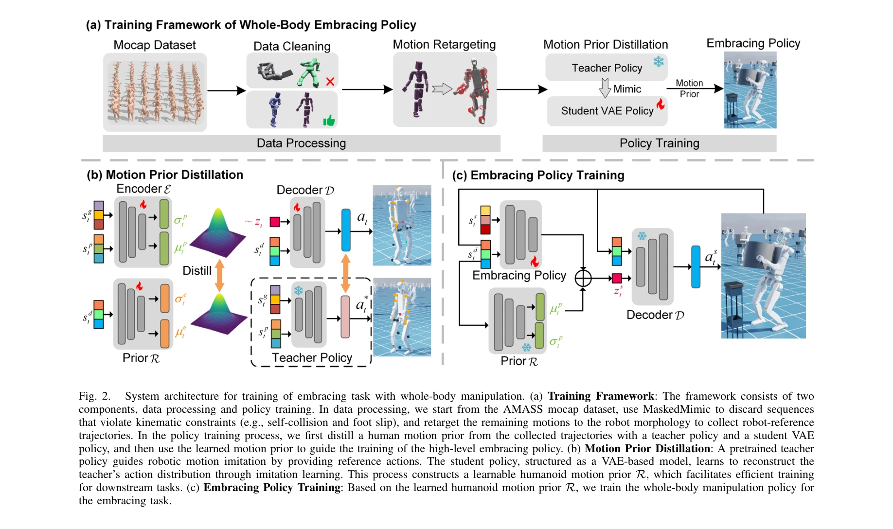

Essence

Fig. 1.
본 논문은 인간의 동작 사전(human motion prior)과 neural signed distance field(NSDF)를 통합한 강화학습 프레임워크를 제안하여 휴머노이드 로봇이 팔과 몸통을 조율해 부피가 큰 물체를 전신으로 포용하고 운반할 수 있도록 하는 방법을 제시한다.
저자: Chunxin Zheng, Kai Chen, Zhihai Bi, Yulin Li, Liang Pan, Jinni Zhou, Haoang Li, Jun Ma | 날짜: 2025-09-16 | DOI: 10.48550/arXiv.2509.13534
Fig. 1.
본 논문은 인간의 동작 사전(human motion prior)과 neural signed distance field(NSDF)를 통합한 강화학습 프레임워크를 제안하여 휴머노이드 로봇이 팔과 몸통을 조율해 부피가 큰 물체를 전신으로 포용하고 운반할 수 있도록 하는 방법을 제시한다.
Fig. 1.

Fig. 2.
총평: 본 논문은 휴머노이드 로봇의 전신 물체 포용 조작을 위한 최초의 RL 프레임워크를 제시하며, 인간 모션 사전과 NSDF의 통합을 통해 학습 효율성과 접촉 강건성을 동시에 달성한 혁신적인 연구다. 시뮬레이션과 실제 로봇 실험을 통한 검증이 충분하고 실용적 가치가 높다.